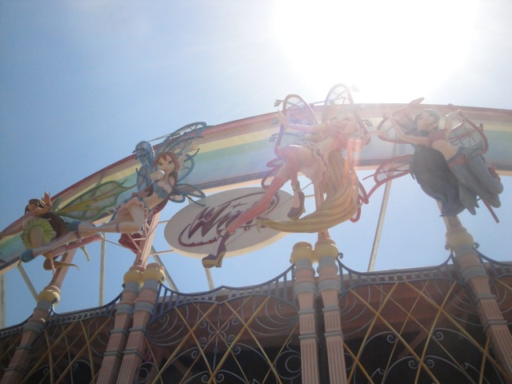

TPR's Mega Europe Trip
Rome
Rome Credit Whoring
Rainbow Magicland
Fiabilandia
Mirabilandia Movieland Studios Gardaland Walygator Park Holiday Park Europa Park Fort Fun Heide Park Schlossbeck Movie Park Germany Phantasialand Parc Asterix Disneyland Paris
Time for us to go to our first real park of the trip!!! Oh, and on the drive there, we passed by this really cool building.
Well wherever we're going, they have these great solar panels to help power the place and bring shade to your car so you don't physically burn yourself trying to drive away.
 Ooh!!! A coaster that isn't a pathetic kiddy credit whoring machine!!!
Ooh!!! A coaster that isn't a pathetic kiddy credit whoring machine!!!
 Yep!!! We're here at Rainbow Magicland!!!! Hey Jersey!!! Come to Rainbow Magicland with us!!! We know you want to!!!!
Yep!!! We're here at Rainbow Magicland!!!! Hey Jersey!!! Come to Rainbow Magicland with us!!! We know you want to!!!!
 All right. Lets first start off with some ERT on Cagliostro!!!
All right. Lets first start off with some ERT on Cagliostro!!!
 Cagliostro is the parks spinning coaster. And since its mostly indoors and in the dark, I didn't know what to expect.
Cagliostro is the parks spinning coaster. And since its mostly indoors and in the dark, I didn't know what to expect.
 But the park did give us lights on rides, which is very cool. But the ride itself is fairly lame. It doesn't really do all to much, nor does it really spin a lot.
But the park did give us lights on rides, which is very cool. But the ride itself is fairly lame. It doesn't really do all to much, nor does it really spin a lot.
Well the park is now open and here they are doing their opening dance number which comes with funniest and weirdest park theme songs. Seriously. Listen to it here.
Selling Nutella in your gift shops is totally badass. Other parks, please take notice.
And they have Italian Gelato, the stuff that kings eat.
Yep!!! Its time to get on the star attraction of the park. Shock.
 Now we supposed to get ERT on it before the park opened, but it was having some problems. But when it did open up, they still gave us the ERT!!! YAY!!!! =)
Now we supposed to get ERT on it before the park opened, but it was having some problems. But when it did open up, they still gave us the ERT!!! YAY!!!! =)
 Dude. SHOCK IS F*CKING AMAZING!!!!
Dude. SHOCK IS F*CKING AMAZING!!!!
 Shock pretty much has everything you want in a good coaster. Shock has it all. The launch is powerful and fast, the big hill provides some nice ejector air, and the non-inverting loop is a crazy element that has both airtime, and great laterals.
Shock pretty much has everything you want in a good coaster. Shock has it all. The launch is powerful and fast, the big hill provides some nice ejector air, and the non-inverting loop is a crazy element that has both airtime, and great laterals.
And Holy Crap!!! This turn is just insane!!! You WHIP through it at ridicously fast speeds!!!!
 Yeah. You pull quite a lot of G Forces right here.
Yeah. You pull quite a lot of G Forces right here.
And then we have the final inversion.
You get some seriously wicked hangtime here.
Yeah. Good speed, Great Airtime, Great Hangtime, Insane Laterals, Great Whip. Great ride. 2 thumbs up from Incrediblecoasters. Get on Shock this instant (And thank you Harold for letting get this photo of your on-ride photo).
Since this park has no shade and barely any water fountains, this was a very nice sight to see.
 All right. Time for another credit.
All right. Time for another credit.
Hey Cody!!! Its another Vekoma Roller Skater.
 Not only that, but its one of the big models too. I rode the big model now, I just had to fly out to Italy to do it. =)
Not only that, but its one of the big models too. I rode the big model now, I just had to fly out to Italy to do it. =)
 You have no idea how happy I am to be riding yet another Wacky Worm.
You have no idea how happy I am to be riding yet another Wacky Worm.
 All right. Just one last credit for us to get at Rainbow Magicland.
All right. Just one last credit for us to get at Rainbow Magicland.
 And yep. It is indeed a Vekoma Mine Train.
And yep. It is indeed a Vekoma Mine Train.
Meh, its fun. But can I go back on Shock now?
WATER!!!! I FOUND WATER!!!! ITS A MIRACLE!!!! Now please leave me here for a good 5 minutes.
 This was a fun drop tower, though I did feel that the brakes were too harsh. Seriously, I've had smoother cliff jumping landings than on this thing.
This was a fun drop tower, though I did feel that the brakes were too harsh. Seriously, I've had smoother cliff jumping landings than on this thing.
Can someone please explain to me what the hell was going on in that shooting dark ride?
Dude!!! The dining options here are fantastic!!! I wish more American Parks had stuff like this for lunch!!!
This may very well be one of the best themed water rides I've ever been on.
SPLOOSH!!!!
I was impressed with their Shoot-The-Chutes. Lets see how well their rapids ride turns out.
Dude, from my experience working at Roaring Rapids at SFMM and then riding this, the differences in saftey standards are astounding. First off, the ride has no seatbelts, and EVERYONE is standing up, and nobody cares since its not against the rules.
Yes please, I do want to take the bizzare Rainbow Magicland Cat home with me.
What the hell are you talking about? Of course this merchandise is family friendly!!!

Ok, lets see what the hell this dark ride is all about.
 Umm, its some sort of weird bizarre Peter Pan sort of knock off. YAY!!!!! =)
Umm, its some sort of weird bizarre Peter Pan sort of knock off. YAY!!!!! =)
All right. Time to get some great ariel shots from the flying island (I already showed you some in the update).
Yeah. I'm pretty sure this was supposed to be a dark ride section, but they didn't have the money to do it.
 I love this Shock shot. Hell, at the time I was making the update, this was my desktop shot.
I love this Shock shot. Hell, at the time I was making the update, this was my desktop shot.
 Ooh. Hang Time!!!
Ooh. Hang Time!!!
Aww. We could've been at the Fashion District instead. Why didn't we go there!!
Well, we had a great day at Rainbow Magicland, but now we have a long drive out to Rimini.
But hey. It was a really great drive that included real nice mountains.
Beautiful Italian Beaches.
And I even managed to see a real castle!!!
Well, we made it to Rimini!!!
After a long drive and a great day at Rainbow Magicland, lets finish it off by drinking giant beers and watching everyone else go crazy about Italy winning a soccer, sorry I mean football game.
(Photo by Robb Alvey)
Fiabilandia
Home